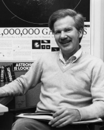

Please note: the AAS Obituaries are temporarily being hosted on this website while their full content is being ingested into the PubPub publishing platform newly adopted by the Bulletin of the American Astronomical Society. When the migration is complete, your existing links will take you to the final, migrated content. Contact peter.williams@aas.org with any questions.
Ralph Robert Robbins Jr. (1938-2005)
Ralph Robert Robbins, Jr., died on 2 December 2005, in Kyle, Texas. His wife, Maria Elena Robbins, his daughters Julia Robbins Kelso and Stephanie Juarez Balles, his son Matthew Juarez, and five grandchildren survive him. Bob was on the faculty at the University of Texas from 1968 until his retirement in 2003.
Bob was born in Wichita, Kansas, on 2 September 1938, the only son of Mildred and Ralph Robert Robbins, Sr. Guided by his high school's policy to provide a practical education to children of working-class parents, Bob began high school with a heavy dose of vocational courses until the results of a test indicated his special talent in mathematics. He was awarded a full scholarship to Yale University, graduating magna cum laude in mathematics in 1960. He won the Warner Prize in Mathematics at Yale that year. He received his Ph.D. in 1966 with a dissertation entitled "The Triplet Spectrum of Neutral Helium in Expanding Nebulae" from the University of California at Berkeley. His interest in college teaching was ignited at this time through summer teaching positions at San Mateo California Junior College and the Ohio State University. Following a year at Texas as a McDonald Observatory Post-doctoral Fellow, Bob taught for a year in the physics department of the University of Houston before returning to the University of Texas at Austin as an Assistant Professor of Astronomy in 1968. He was promoted to Associate Professor in 1972.
Bob's research in the early 1970s on theoretical studies of helium was of vital importance to astronomers for over three decades. These pioneering calculations became vital to observational astronomers in the mid-1990s as interest grew in the primordial helium produced by the Big Bang.
Bob's interest and influence in education was international in scope. In the summers 1968-1970, he was a government consultant in Mathematics in East Pakistan (now Bangladesh). He consulted with the government that was preparing a master plan for technical education. While teaching all the mathematics instructors of the polytechnic institutes of the country, he co-authored a textbook "Polytechnic Mathematics." Bob also was active for many years in Commission 46 of the International Astronomical Union, including compiling overviews of educational materials available in English for over a decade and serving on the organizing committee for several international meetings.
In the 1970s, Bob and William Jefferys refined their view of how introductory astronomy should be taught — pioneering a "minds-on, hands-on" approach that emphasized "learning by doing" even in the non-science majors courses. This innovative work in astronomy education led to several co-authored books: a general-level textbook (Discovering Astronomy), a book to accompany upper-division laboratory courses (Modern Astronomy: an Activities Approach), and a workbook for college teachers (Effective Astronomy Teaching and Student Reasoning Ability). Bob also popularized self-paced astronomy courses that demanded in-depth understanding from students as well as requiring observations of the sky and small experiments. Bob was named a Piper Professor in 1972, a statewide award that recognized his teaching excellence. For many years Bob served both as an American Astronomical Society Shapley Visiting Lecturer and as a National Science Foundation Chautauqua lecturer, thus bringing his expertise to colleges and college instructors across the nation.
Bob was fascinated with not only how undergraduate students learn, but also how people of past civilizations learned about astronomy and used it in their lives and rituals. Bob's colleague William Jefferys recalled a 1967 Spring Break trip: "We got into Bob's white and purple Dodge and went to Mexico with a large tent, big enough for the party of six. We camped on the beach and by the side of the road, got royally bitten by mosquitoes, suffered a broken spring and flat tire on the car (both of which were fixed in Mexico, but the tire expired just as we reentered the US). We also saw many interesting sites, and Bob's interest in archaeoastronomy may have been kindled or at least renewed on that trip."
In the 1980s, Bob became increasingly interested in archaeoastronomy. Being part Cherokee, he honored his own ethnic heritage through his studies and the new courses he developed and taught. His field research covered sites in central Texas, New Mexico, Mexico, and Central America. He regaled his colleagues with tales of his travels through guerilla-infested jungles with a platoon of soldiers as a very essential escort to get to a site of astronomical influence. This interest grew to publications in archaeoastronomy and extended his teaching from the astronomy department to offering graduate classes in the Institute for Latin American Studies on Archeo- and Ethno-Astronomy at the University of Texas.
As an involved faculty member, Bob served on education committees of the American Astronomical Society, the University of Texas Graduate Studies Committee in Math and Science Education for the College of Education, as well as departmental and college committees. He served as undergraduate advisor for two years and chair of the Graduate Admissions Committee for four years for the Astronomy Department. He took special interest in preparing astronomy graduate students, both in formal courses and in mentoring situations, to become better teachers.
Bob's final years of teaching were hampered by the onset of Parkinson's and Lewy Body diseases that forced his retirement. He met his disability with courage and dignity. A gentle person who cared deeply about students and student learning, his friends and family will miss him.
Obituary written by: Mary Kay Hemenway (University of Texas at Austin)
BAAS Citation: BAAS, 2007, 39, 1078
SAO/NASA ADS Bibcode: 2007BAAS...39.1078H